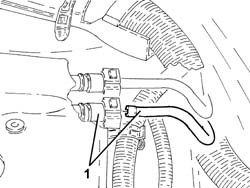
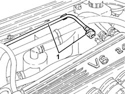

1080E66 AIR INTAKE CHAMBER fuel vapour intake PIPE - R.R.
- Path
- Procedures > 10 ENGINE > 1080 EXHAUST EMISSION CONTROL SYSTEM > 1080E evaporation control system > 1080E66 AIR INTAKE CHAMBER fuel vapour intake PIPE - R.R.
- Kind
- repair procedure (removal / refitting; the operation number is the code)
- Applies to
- engines: 2.5 V6, 3.2 V6; all production periods
- Interactive page
- https://sloeber94.github.io/elrnDB-a156/en/#/3237605
Applies to: engines: 2.5 V6, 3.2 V6; all production periods
 Removing
Removing
 Refitting
Refitting1. Disconnect the fuel vapour pipe from pipe to air intake chamber, intermediate connector side.

Applies to: engines: 2.5 V6, 3.2 V6; all production periods
1. Disconnect the fuel vapour pipe from pipe to air intake chamber, chamber side, and remove.

Applies to: engines: 2.5 V6, 3.2 V6; all production periods
Refitting
RemovingRefit the fuel vapour pipe from pipe to air intake chamber and connect to the chamber.
Connect the fuel vapour pipe from pipe to air intake chamber, intermediate connector side.